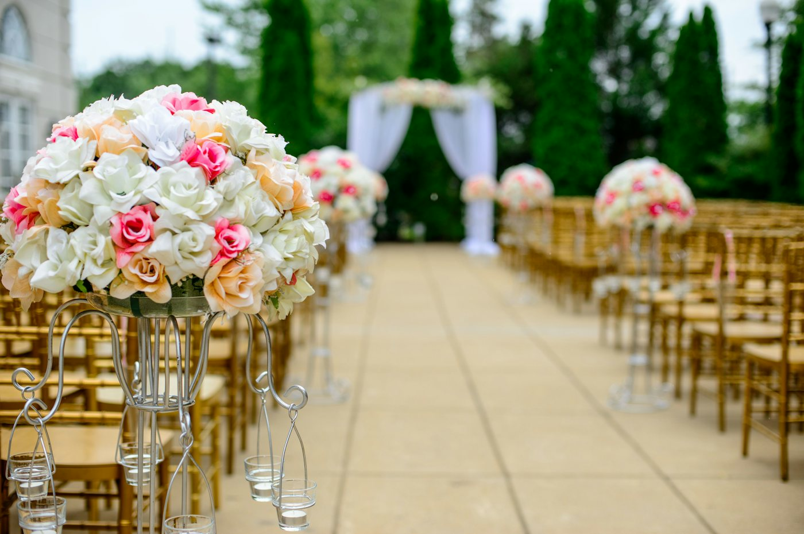
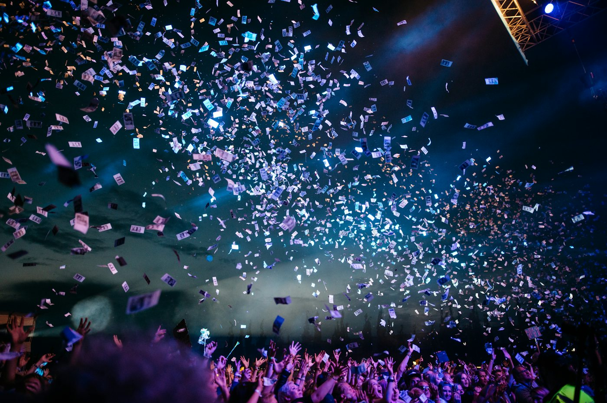
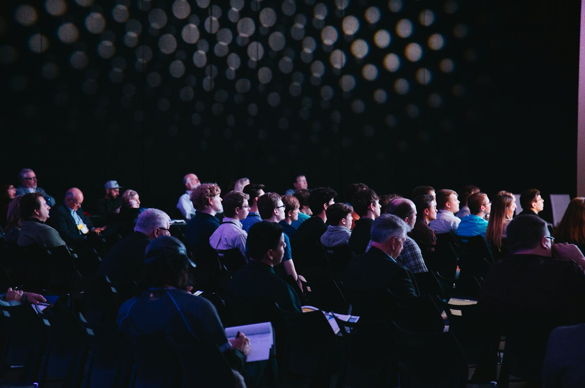

Um casarão de 1920 para a festa da sua vida.
Cada evento tem uma coordenadora dedicada do primeiro orçamento ao dia da festa, com cronograma e lista de tarefas compartilhados.
Da cerimônia ao último café, com equipe própria. Uma equipe fixa de vinte pessoas, que trabalha junta há mais de dez anos.
Marta GiardinoFundadora e chef


❦
Pacotes e valores
Valores por convidado, para eventos de cem pessoas.
Coquetel
- Coquetel clássicoR$ 139
12 tipos de finger food, 4 horas
- BrunchR$ 119
Mesa de pães, frios e quentes
- Coffee breakR$ 48
Para eventos corporativos
Jantar
- Jantar servidoR$ 219
Entrada, dois pratos e sobremesa
- Ilhas gastronômicasR$ 189
Massas, risotos e carnes
- ChurrascoR$ 169
Cortes nobres e acompanhamentos
- Menu infantilR$ 79
Para crianças de 5 a 10 anos
Complementos
- Open barR$ 58
Drinques clássicos e autorais
- Mesa de docesR$ 32
20 variedades finas
- Decoração floralsob consulta
Projeto personalizado
Valores por convidado, para eventos de 100 pessoas, sujeitos a reajuste conforme data e cardápio.
Horários
| Visitas, terça a sábado | 10h–18h |
|---|---|
| Domingo | com hora marcada |
Onde estamos
Estrada da Rhodia, 5.800 — Barão Geraldo, Campinas
Espaço, buffet e decoração em um contrato.
Degustação gratuita do cardápio.

Consulte a data do seu evento
Diga a data e o número de convidados. Respondemos no mesmo dia com disponibilidade e uma estimativa de valor.